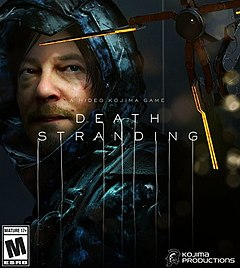
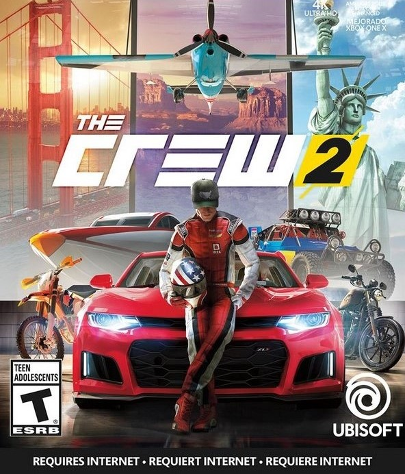
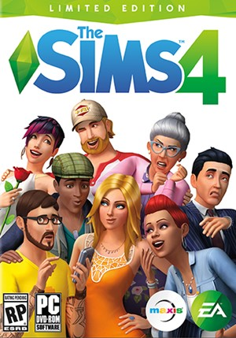
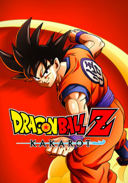
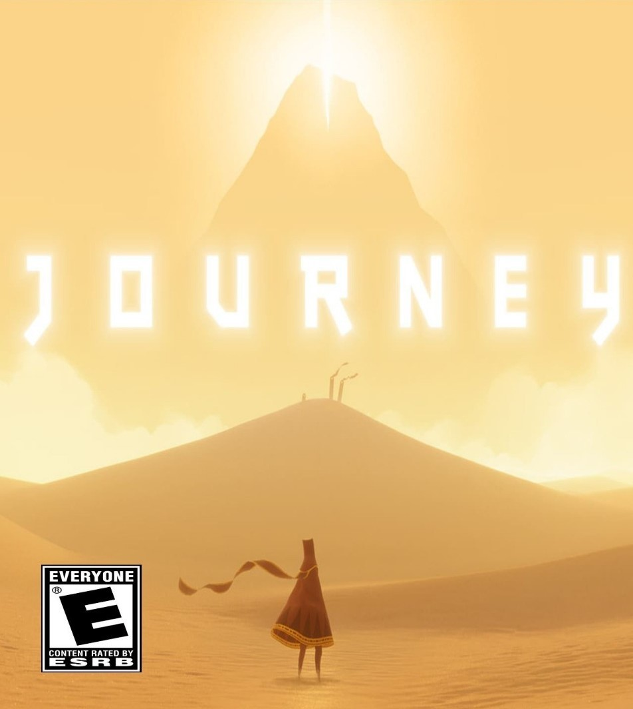

FIFA 20
postado em 15 de dezembro de 2019
FIFA 20 apresenta uma nova maneira de jogar futebol, com toda cultura, criatividade e estilo das ruas e quadras pelo mundo. Crie seu jogador ou jogadora, escolha seu equipamento e mostre seu estilo no mundo inteiro, de uma quadra em Londres a uma passagem subterrânea em Amsterdã. Jogue futebol do seu jeito em vários formatos de partida, como 5x5, com ou sem paredes, sem goleiros ou futsal profissional.
Experimente o novo sistema Football Intelligence, que possibilita um plataforma de realismo sem igual, deixando você no centro de todas as partidas. O ritmo de jogo autêntico dá aos jogadores mais noção de tempo, espaço e posicionamento, enfatizando seu estilo de jogo. Você também tem controle de momentos decisivos que afetam diretamente os resultados dos jogos, tanto no ataque como defesa, com jogadas ensaiadas e finalizações elaboradas.
Postado por Guilherme OliveiraDeath Stranding
postado em 15 de dezembro de 2019 Death Stranding é um jogo de Hideo Kojima, consagrado criador da série Metal Gear que agora estreia com sua produtora Kojima Productions em parceria exclusiva com a Sony. O jogo tem um clima incomum, onde, à primeira vista, não é possível presumir o que irá acontecer a seguir. Ele foi apresentado durante a convenção E3 de 2016 e vem trazendo a curiosidade dos jogadores.
O jogo conta como ator principal Norman Reedus, também conhecido como Daryl Dixon no seriado The Walking Dead. Além disso nos trailer apresentados do game é possível ver um clima de guerra, provavelmente no mundo, onde algum “ser”, animal, parasita, aparentemente controla os homens e maquinas, fazendo-os agir da forma que este “parasita” desejar.
Postado por Guilherme OliveiraGod of War
postado em 15 de dezembro de 2019
Sua vingança contra os deuses do Olimpo agora é passado, em God of War, Kratos vive como um homem comum nas terras dos deuses Nórdicos, ensinando seu filho a sobreviver a todos os perigos que aparecerem por sua frente. Kratos está empenhado em passar todos seus conhecimentos ao seu filho, que está determinado a conquistar o respeito de seu pai. Finalmente o assassino de deuses tem a oportunidade de corrigir seus erros do passado.
O jogo traz um cenário totalmente diferente dos jogos anteriores, repleto de florestas e áreas montanhosas, repleto de criaturas e deuses da mitologia nórdica. Kratos agora possui um machado poderoso e mágico que traz muita ação no combate corpo a corpo. Além de possuir outros armamentos que fazem com que este grande guerreiro torne-se ainda mais poderoso e destrutivo.
Postado por Guilherme OliveiraThe Crew 2
postado em 15 de dezembro de 2019 The Crew 2 traz a emoção do espirito do esporte motor americano em um dos mundo abertos mais empolgantes do mundo dos games, além disso ele trouxe diversas novidades e mudanças de seu antecessor, The Crew. O mapa possui diversas pistas e modos de corrida diferentes, além de não apresentar somente carros, no “cardápio” de veículos, agora é possível pilotar embarcações – barcos, lanchas, etc - e vários tipos de aviões.
Além das mudanças gráficas e o mapa completamente remodelado, em relação ao seu antecessor, o jogo apresenta novos desafios que te possibilitam, voar pela névoa e nuvens acima das montanhas rochosas, queimar pneus pelas ruas de Nova Iorque ou acelerar sua lancha pelo Rio Mississipi. São quatro tipos diferentes de pilotos, pilotos de rua, pilotos profissionais, de fora da estrada e mestres do estilo livre. Veja qual desses dessas quatro categorias você se encaixa mais e pise no acelerador. ATENÇÃO: O jogo é totalmente online, requer uma conexão com a internet para funcionar corretamente.
Postado por Guilherme OliveiraCall of Duty: Modern Warfare
postado em 14 de dezembro de 2019
Call of Duty: Modern Warfare os jogadores assumem o papel de operadores letais de alto nível em uma saga emocionante que vai afetar o equilíbrio global de poder. Desenvolvido pelo respeitado estúdio, a Infinity Ward oferece uma releitura épica da icônica série Modern Warfare a partir do zero. Prepare-se, pois a saga mais prestigiada de toda a franquia está de volta.
Na campanha visceral e dramática para um jogador, participe de operações secretas de tirar o fôlego ao lado de um elenco diversificado de forças especiais internacionais em cidades icônicas da Europa e áreas voláteis do Oriente Médio. Descubra a derradeira experiência online com o multijogador clássico ou colabore com seus amigos em várias operações de elite acessíveis a todos níveis de habilidade.
Postado por Guilherme OliveiraThe Sims 4
postado em 13 de dezembro de 2019 The Sims 4 é o jogo de simulação que permite brincar com a vida de um jeito inovador, e agora está presente também nos consoles da nova geração. Controle Sims mais espertos, com aparências diferentes, personalidades, comportamentos e emoções únicas. Experimente níveis novos de criatividade ao esculpir seus Sims e crie casas lindas.
Veja, compartilhe e acrescente conteúdo novo ao seu jogo na Galeria. Controle a mente, corpo e coração dos seus Sims e explore suas novas possibilidades de jogo em vizinhanças vibrantes que dão vida a suas histórias. Crie Sims únicos e personalize sua aparência, roupas, traços de personalidade, habilidades, carreiras e estilos de andar. Pela primeira vez, os Sims sentem e também expressam emoções.
Postado por Guilherme OliveiraDragon Ball Z: Kakarot
postado em 13 de dezembro de 2019 Em Dragon Ball Z: Kakarot vivencie a incrível história de Goku, um dos personagens mais queridos do mundo dos animes. Além das batalhas épicas, experimente a vida no mundo de Dragon Ball Z enquanto luta, pesca, come e treina com o Goku. Explore as novas áreas e aventuras à medida que avança na história e cria laços poderosos com outros heróis do universo do anime.
O game conta com missões secundárias divertidas, incluindo momentos da história nunca antes vistos que respondem a algumas perguntas pendentes da mitologia da franquia. Jogue batalhas icônicas da saga em uma escala diferente de qualquer outra. Lute em vastos campos de batalha com ambientes destrutíveis e vivencie batalhas épicas com chefes que testarão os limites de suas habilidades de combate.
Postado por Guilherme OliveiraJourney
postado em 13 de dezembro de 2019 Journey traz o épico jogo de aventura Journey, com mais dois incríveis títulos da mesma desenvolvedora, Flow e Flower. Sobrevoe as ruínas e deslize pelas areias enquanto explora um mundo antigo onde a vida floresceu, com visuais impressionantes, música assombrosa e jogabilidade exclusiva. Journey oferece uma experiência sem igual.
O game conta com missões secundárias divertidas, incluindo momentos da história nunca antes vistos que respondem a algumas perguntas pendentes da mitologia da franquia. Jogue batalhas icônicas da saga em uma escala diferente de qualquer outra. Lute em vastos campos de batalha com ambientes destrutíveis e vivencie batalhas épicas com chefes que testarão os limites de suas habilidades de combate.
Postado por Guilherme Oliveira